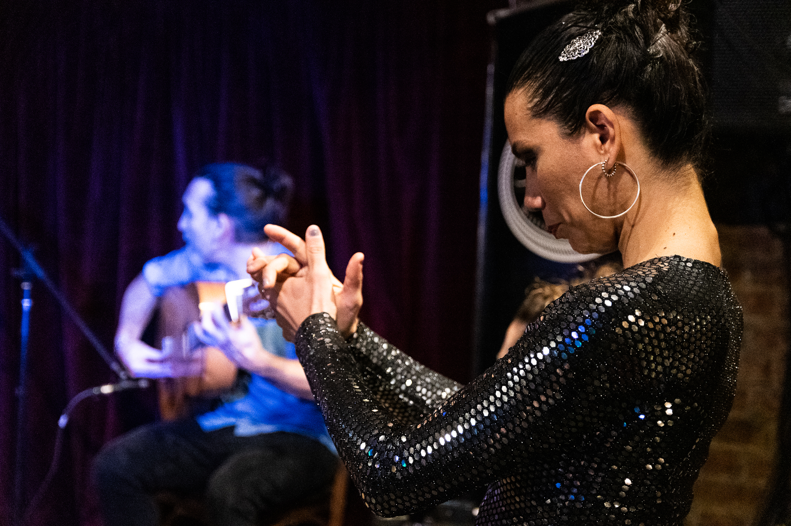
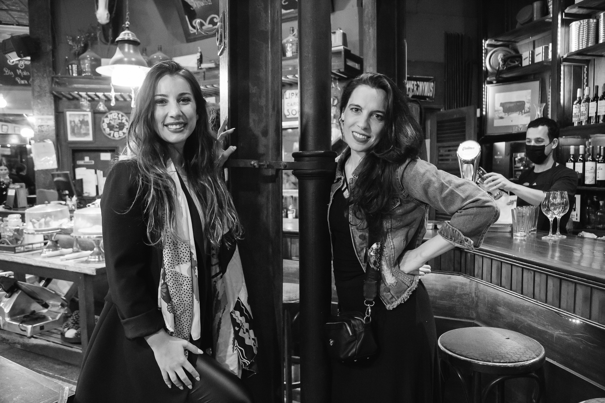

MALA CARA FLAMENCO
Noches mágicas. Flamenco actual. Tablao, música y cocina en Recoleta.
MALA CARA FLAMENCO presenta una novedosa combinación entre el arte ancestral andaluz y su llegada cosmopolita actual, invitando a la celebración de la belleza que da el encuentro entre músicos y bailaoras. Nuestro espectáculo le pone ritmo al tiempo, o mejor, hace del tiempo un tempo: música y baile en su punto justo, pies y guitarras, brazos y cajones, aunados todos en el ritmo preciso de cuerpos y sonidos. Un viaje musical sorprendente. Una puerta abierta. Un ritual, un conjuro para que el escenario se vuelva tablao, el espectáculo una fiesta íntima y la celebración sea compartida con el público.
